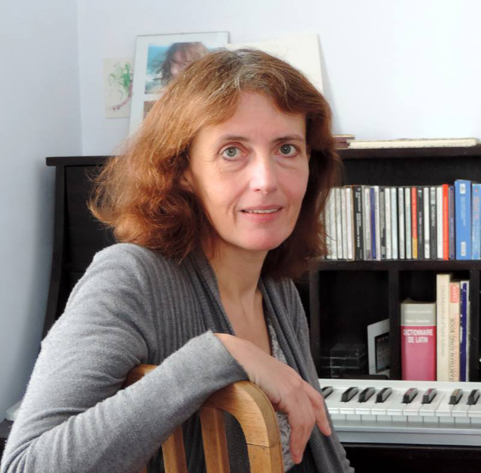

Direction musicale
Emmanuèle Dubost
Formée au Conservatoire de Paris (CNSMP), où elle a obtenu le 1er prix d'Histoire de la musique, puis à la Sorbonne (licence de musicologie), Emmanuèle Dubost a étudié la direction de chœur au Centre d'Études Polyphoniques de Paris, où elle a passé le diplôme d'état puis le C.A. Initialement clarinettiste, elle a également étudié le chant et l'orgue.
Pédagogie
Depuis 1994, elle a développé avec ses collègues un département de chant choral au conservatoire de Bourg-la-Reine/Sceaux, qui compte 21 chœurs. Elle y enseigne la direction de chœur d'enfants et coordonne la Cham Vocale. Elle dirige les chœurs d'adultes Eonia et Vocalys, à Châtillon et Bourg-la-Reine. Elle enseigne aussi la direction de chœur pour ensemble mixte d'adultes et forme les professeurs des écoles.
Sur scène
Elle a créé la Compagnie Chœur en Scène, ensemble vocal réunissant chanteurs et comédiens professionnels, pour lequel elle a conçu et dirigé une trentaine de spectacles associant polyphonie chorale et spectacle vivant. Elle a dirigé le chœur d'enfants pour la création de Cuore Opéra (Caroline Gautier et Carlo Carcano, 18 dates en Île-de-France dont l'Opéra Bastille), ainsi que de nombreux spectacles, notamment à l'Opéra Bastille dans le cadre du programme Dix mois d'école et d'opéra .
Crédit photo : Michel Grinand. Source : livret des professeurs de conservatoire, Vallée Sud – Grand Paris.